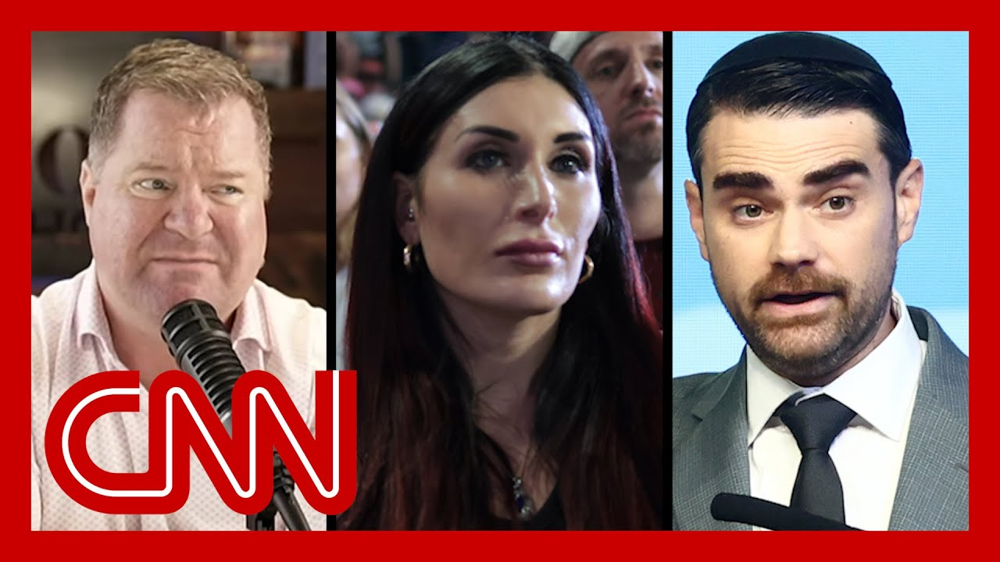

【MAGA媒体明星因卡塔尔飞机礼物报道抨击特朗普】
Summary: President Trump faces bipartisan backlash for accepting a luxury jet gift from Qatar, with even loyal right-wing media supporters criticizing the move as unethical and damaging to his administration.
摘要： 特朗普总统因接受卡塔尔豪华飞机礼物面临两党抨击，连忠诚的右翼媒体支持者也批评此举不道德且损害其政府形象。

⏱️ Estimated Reading Time: 17 min
So President Trump is now facing bipartisan backlash for his plans to accept that luxury jet as a gift from the Qatari royal family and a rare public break from the Trump administration.
特朗普总统因计划接受卡塔尔王室赠送的豪华飞机而面临两党抨击，这是特朗普政府罕见的公开分歧。
Some of Trump's most vocal and loyal supporters in right wing media are also now criticizing him, calling this move a stain on his administration even.
一些右翼媒体中最直言不讳且忠诚的特朗普支持者现在也开始批评他，甚至称此举是其政府的污点。
CNN's Brian Stelter is tracking this one for us.
CNN的布莱恩·斯特尔特正在为我们追踪此事。
And, Brian, what are you seeing?
布莱恩，你看到了什么？
This is the biggest break that I've seen in the first four months of Trump's return to office.
这是特朗普重返职位后四个月内我见过的最大分歧。
Between his pro-Trump propaganda machine, those pro-Trump stars that are always supporting him and the president.
在他的亲特朗普宣传机器和那些一直支持他的亲特朗普明星与总统之间。
This is a dramatic break not among every single MAGA media star out there, but among many of them.
这不是所有MAGA媒体明星的分歧，但确实是其中许多人的戏剧性分裂。
it's one thing for Democratic lawmakers to be calling this profoundly unethical and possibly illegal.
民主党议员称此举极不道德且可能非法是一回事。
We've heard a lot of that.
我们已经听到很多这样的声音。
But some MAGA media commentators are saying the same things.
但一些MAGA媒体评论员也在说同样的话。
In the past 24 hours, we've heard prominent pro-Trump media stars call this plan to accept a jet from Qatar, to use the Air Force One, a, quote, bribe a grift and a stain on the administration.
过去24小时内，我们听到著名的亲特朗普媒体明星称接受卡塔尔飞机并将其用作空军一号的计划是“贿赂”“骗局”和“政府的污点”。
And this is even coming from figures like Laura Loomer, the far right provocateur who has a direct line to Trump.
甚至像劳拉·卢默这样的极右翼煽动者（与特朗普有直接联系的人）也这么说。
I mean, these are people who are usually steadfast supporters of the president, but in this case, they're speaking out against the deal.
这些人通常是总统的坚定支持者，但这次他们公开反对这笔交易。
Let me show you two examples.
让我举两个例子。
One is from Ben Shapiro, who co-founded The Daily Wire, is a prominent podcaster.
一个是本·夏皮罗，他是《每日电讯》的联合创始人，著名播客主持人。
The other is Erick Erickson, the radio talk show host.
另一个是电台脱口秀主持人埃里克·埃里克森。
That's not America first.
这不是“美国优先”。
Like, please define America first in a way that says you think you should take sacks of cash from the Qatari royals who are behind Al Jazeera.
请用“你认为应该从支持半岛电视台的卡塔尔王室那里拿钱”来定义“美国优先”。
It just isn't America First in any conceivable way.
这无论如何都不可能是“美国优先”。
If you want President Trump to succeed, this kind of skeezy stuff needs to stop.
如果你希望特朗普总统成功，这种卑鄙的行为必须停止。
My problem with taking this plane from Qatar is I do not think the president of the United States of America should sit and fly on a plane purchased with the same money used to murder American citizens.
我反对接受卡塔尔飞机的原因是，我认为美国总统不应该乘坐用杀害美国公民的钱购买的飞机。
As you hear, there are a lot of the criticism centers on Qatar, which has been a home for Hamas leaders for a number of years now.
如你所闻，许多批评集中在卡塔尔，该国多年来一直是哈马斯领导人的庇护所。
The country reportedly kicked out those Hamas officials, back last November, right after Trump won the election.
据报道，该国在去年11月特朗普赢得选举后驱逐了这些哈马斯官员。
So a lot of the criticism is about Qatar and about what Qatar's trying to get from President Trump.
因此，许多批评是关于卡塔尔以及该国试图从特朗普总统那里得到什么。
Some of the other commentators are focusing on the optics of this, the appearance of conflict.
其他一些评论员则关注此事的外在表现，即冲突的表象。
Ben Shapiro, for example, was saying to his viewers, that's right.
例如，本·夏皮罗对他的观众说，没错。
What if the Bidens did this?
如果是拜登家族这么做呢？
What if it was Hunter or Joe Biden?
如果是亨特·拜登或乔·拜登呢？
And trying to say this is hypocritical and trying to take a principled stand?
并试图称这是虚伪的，试图表明原则立场？
You know, since we're talking about an airplane, here's an airplane reference, right?
既然我们在谈论飞机，这里有个飞机的比喻，对吧？
There's different wings of right wing media.
右翼媒体有不同的派别。
There's different cabins on this plane.
这架飞机上有不同的机舱。
There are conservative outlets like National Review that support lots of parts of Trump's agenda, but are often critical of the man himself.
像《国家评论》这样的保守派媒体支持特朗普议程的许多部分，但经常批评他本人。
So National Review is out with an editorial this morning calling this a poison plane, saying this gifted 747 is ethically suspect and made worse by the fact that Qatar is no friend of the U.S. that's National Review.
《国家评论》今早发表社论，称这是一架“毒飞机”，表示这架赠送的747在道德上可疑，且卡塔尔并非美国的朋友，情况更糟。
But even figures who are very closely aligned with the president, I mentioned Laura Loomer.
但即使是与总统关系非常密切的人物，比如劳拉·卢默。
She has been outspoken on ex on the social media platform in the last two days, almost trying to get Trump's attention, trying to get him to change his mind.
过去两天她在社交媒体平台上直言不讳，几乎是在试图引起特朗普的注意，试图让他改变主意。
What I have not seen a lot of, though, is a lot of television coverage of this on Fox News.
但我没有看到福克斯新闻对此事的太多电视报道。
So if the president is watching Fox on his trip abroad, he's not hearing a lot of this criticism.
因此，如果总统在国外旅行时观看福克斯新闻，他不会听到太多这种批评。
But it is definitely prominent all across right wing social media and the podcasting realm gate.
但这在右翼社交媒体和播客领域确实非常突出。
So I mean there who is speaking out supporting is there?
那么，有没有人公开支持呢？
Who is speaking out defending the president's move here?
谁在公开为总统的这一举动辩护？
Right.
没错。
That's the other interesting thing about this.
这是另一个有趣的地方。
I'm talking all about the condemnations.
我一直在谈论谴责。
There's not a lot of defense.
没有太多辩护。
There's not a lot of support out there.
没有太多支持。
You're not seeing lots of editorial writers or columnists on the right who are defending this proposed budget gift.
你没有看到很多右翼的社论作者或专栏作家为这一拟议的礼物辩护。
Instead, those figures are just ignoring this, trying to pretend like it's not happening.
相反，这些人只是无视此事，试图假装它没有发生。
And of course, we don't know for sure if it will happen.
当然，我们不确定这是否会发生。
Carter is pushed back on some of the reports, and the white House says this is still under review.
卡特尔对一些报道进行了反驳，白宫表示此事仍在审查中。
So it's quite possible this deal could fall apart over time.
因此，这笔交易很可能会随着时间的推移而破裂。
However, we know the president really does want a new version of Air Force One.
然而，我们知道总统确实想要一架新的空军一号。
He's been very loud and outspoken about this, and yesterday he said you'd be stupid not to take a free gift.
他对此非常直言不讳，昨天他还说拒绝免费礼物是愚蠢的。
So I I've seen some right wing media outlets just amplifying that Trump message and blaming the media.
因此，我看到一些右翼媒体只是放大特朗普的这一信息并指责媒体。
But what's notable here is that there's mostly just an ignoring sort of a reaction going on, trying to pretend this isn't happening.
但值得注意的是，大多数人只是无视此事，试图假装它没有发生。
And so you either have a lot of criticism from the right, or you have folks trying to pretend that it's not going to happen at all.
因此，要么是来自右翼的大量批评，要么是人们试图假装这根本不会发生。
But figures like Erick Erickson, who heard from a moment ago, Erick Erickson, thinks this could end up getting Trump in legal trouble going down the road.
但像埃里克·埃里克森这样的人认为，这最终可能会让特朗普陷入法律麻烦。
So there are figures who are supportive of the president, who one of them is succeed, but they think this is actually going to hurt him.
因此，有一些支持总统的人希望他成功，但他们认为这实际上会伤害他。
And that's why you're hearing so much criticism.
这就是为什么你听到这么多批评。
Interesting, Brian, thank you so much.
很有趣，布莱恩，非常感谢。
It's good to see you.
很高兴见到你。
President Trump is getting an extravagant royal welcome in Saudi Arabia.
特朗普总统在沙特阿拉伯受到奢华的皇家欢迎。
And blurring the lines, critics say, between his public office and private business, this is the first stop in his major Middle East swing.
批评者称，这模糊了他的公职和私人业务之间的界限，这是他中东之行的第一站。
He will also visit Qatar and the UAE, three countries that have done business with the Trump Organization and Qatar is now offering to give the Trump administration a $400 million luxury jet to possibly use as Air Force One.
他还将访问卡塔尔和阿联酋，这三个国家都与特朗普集团有业务往来，卡塔尔现在提出向特朗普政府赠送一架价值4亿美元的豪华飞机，可能用作空军一号。
As gift goes, it's a pretty lavish, lavish one, and it raises all kinds of ethical and security questions.
就礼物而言，这是一份非常奢华的礼物，并引发了各种道德和安全问题。
With us now is John Bolton, President Trump's former national security adviser and a former U.S. ambassador to the United Nations.
现在和我们在一起的是约翰·博尔顿，特朗普总统的前国家安全顾问和前美国驻联合国大使。
Ambassador, always great to see you.
大使先生，很高兴见到你。
Just very quickly on the gift of this jet.
关于这架飞机的礼物，简单说一下。
What's your opinion on the optics of it?
你对此事的外在表现有何看法？
Well, I don't think the optics are good when you have people in the UN in Trump's camp like, Rand Paul and Laura Loomer both saying they think it's a bad idea.
我认为当特朗普阵营中像兰德·保罗和劳拉·卢默这样的人都说这是个坏主意时，外在表现并不好。
That ought to say something about the potential political blowback that he'll face, even from MAGA Republicans.
这应该说明他将面临潜在的政治反弹，甚至来自MAGA共和党人。
I think the major objection here is the security objection.
我认为主要的反对意见是安全问题。
we don't know what has happened to that plane.
我们不知道那架飞机发生了什么。
We don't know who's had access to it.
我们不知道谁接触过它。
And if they really wanted to bring it up to Air Force One standards, it would require significant overhaul for all kinds of reasons.
如果他们真的想将其提升到空军一号的标准，出于各种原因，需要进行重大改造。
I mean, just start with aerial refueling, which obviously Air Force One can do.
比如空中加油，空军一号显然可以做到。
It has special fuel tanks, most normal 747 don't have an aerial refueling capability.
它有特殊的油箱，大多数普通747没有空中加油能力。
And that doesn't even deal with the question of communication, secure communications.
这甚至还没有涉及通信和安全通信的问题。
The president needs, air defense systems, it needs and all the other things that go for Air Force One.
总统需要防空系统，以及空军一号所需的所有其他东西。
I think many people don't realize the current Air Force ones are flying offices.
我认为许多人没有意识到当前的空军一号是飞行办公室。
They're not flying palaces.
它们不是飞行宫殿。
It's it's, it's designed to be a working space for the president and his staff.
它的设计是总统及其工作人员的工作空间。
and I don't think is what this this particular flying palace, he's looking at is so would be a complete redo of the airplane if he if he wanted it.
我不认为他正在考虑的这架飞行宫殿会是这样的，如果他想要它，就需要对飞机进行全面改造。
The president saying he plans to use the newer, some $400 million Boeing 747 plane to replace an aging Air Force One.
总统表示，他计划用一架价值约4亿美元的波音747飞机替换老化的空军一号。
The idea of that gift, though, is raising not only ethical and legal questions, it's also inspiring backlash from U.S. lawmakers, including some of those most loyal to the president, some in his own party.
然而，这一礼物的想法不仅引发了道德和法律问题，还引发了美国立法者的反弹，包括一些最忠诚于总统的人，以及他所在政党的一些人。
CNN's Tom Foreman has more.
CNN的汤姆·福尔曼有更多报道。
The possibility of a $400 million gift jet from Qatar to serve as President Trump's new Air Force One, he's drawing lightning strikes of criticism.
卡塔尔可能赠送一架价值4亿美元的飞机作为特朗普总统的新空军一号，这引发了猛烈的批评。
Trump's latest grift.
特朗普的最新骗局。
It's not just bribery.
这不仅仅是贿赂。
It's premium foreign influence with extra leg room.
这是带有额外空间的高级外国影响力。
And from the vice chair of the Senate Ethics Committee, this is almost exactly the sort of gift that our founders had in mind that Americans shouldn't accept.
参议院道德委员会副主席表示，这几乎正是我们的开国元勋认为美国人不应该接受的那种礼物。
And I'll remind you, other federal employees can't accept even $50.
我要提醒你，其他联邦雇员甚至不能接受50美元的礼物。
The plane would appear to fly in the face of the US Constitution's Emoluments Clause, which says no person holding any office shall, without the consent of Congress, except of any president of any kind, whatever from any king, prince or foreign state.
这架飞机似乎违反了美国宪法的薪酬条款，该条款规定，未经国会同意，任何担任公职的人不得接受任何国王、王子或外国国家的任何形式的礼物。
Ask about that Trump hit back.
当被问及此事时，特朗普进行了反击。
Not a gift to me.
这不是给我的礼物。
It's a gift to the Department of Defense.
这是给国防部的礼物。
Analysts say the gift plane would likely have to be entirely stripped down and rebuilt to make sure it does not hold technology detrimental to presidential security.
分析人士表示，这架赠送的飞机可能需要完全拆解和重建，以确保它不包含有损总统安全的技术。
After all, Qatar has long ties to Hamas, a terrorist group.
毕竟，卡塔尔长期以来与恐怖组织哈马斯有联系。
In the eyes of the U.S. government.
在美国政府眼中。
The nation of Qatar, unfortunately, has historically been a funder of terrorism at a very high level.
不幸的是，卡塔尔在历史上一直是恐怖主义的高级资助者。
Why is the United States of America accepting a gift of this magnitude from a foreign government that support a terrorist organization?
为什么美利坚合众国要接受一个支持恐怖组织的外国政府如此贵重的礼物？
In his first term, Trump hit upon the idea of revamping Air Force One, upgrading it, changing the color.
在他的第一个任期内，特朗普提出了改造空军一号、升级它并改变颜色的想法。
You know what colors we using?
你知道我们用什么颜色吗？
Take a guess.
猜猜看。
Red, white and blue, red, white and blue.
红色、白色和蓝色，红色、白色和蓝色。
He became frustrated by the long, expensive process of doing all that.
他对这一漫长而昂贵的过程感到沮丧。
But now Qatar has offered him a quick fix and he's on board.
但现在卡塔尔为他提供了一个快速解决方案，他接受了。
I would never be one to turn down that kind of an offer.
我永远不会拒绝这样的提议。
I mean, I could be a stupid person, say, no, we don't want a free, very expensive airplane.
我的意思是，我可能是个愚蠢的人，说“不，我们不想要一架免费的、非常昂贵的飞机”。
The president saying this is a gift to the Pentagon, not to him, doesn't necessarily hold water either, because the Emoluments Clause basically says, you can't give a gift like this to an elected official or anybody who works for him, which would include the folks at the Pentagon.
总统称这是给五角大楼的礼物，而不是给他的，这也不一定站得住脚，因为薪酬条款基本上规定，你不能向民选官员或为他工作的任何人赠送这样的礼物，这包括五角大楼的人。
So even though the president may want to treat this like it's no big deal, it is a big deal and likely to stay that way until it's settled.
因此，尽管总统可能想把这当作没什么大不了的事，但这是一件大事，而且在解决之前可能会一直如此。
Tom Foreman, CNN, Washington.
CNN华盛顿记者汤姆·福尔曼。